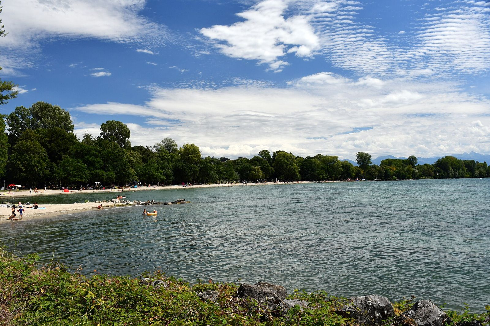

En bref
La qualité de l’eau de baignade du Léman est suivie par les autorités : à Genève, le canton publie des analyses datées plage par plage ; autour du lac, la CIPEL publie une carte et un classement des plages. Une analyse ne vaut que pour le moment où elle a été faite : avant de se baigner, il faut regarder sa date. Mon Lac n’affiche une qualité que si l’analyse a moins de 30 jours, et renvoie sinon vers la source.
Qui contrôle la qualité de l’eau des plages du Léman ?
À Genève, le canton analyse l’eau des plages et des lieux de baignade et publie les résultats ; ils sont aussi diffusés en données ouvertes par le système d’information du territoire genevois (SITG). Pour l’ensemble du lac, la Commission internationale pour la protection des eaux du Léman (CIPEL) publie une carte des plages avec leur classement.
Comment lire le classement d’une plage ?
Les plages genevoises sont classées en catégories, de l’eau « excellente à bonne » à l’eau « de mauvaise qualité », en passant par « bonne à moyenne » et « pouvant être momentanément polluée ». Quand une plage est notée « pouvant être momentanément polluée », la baignade est à éviter en particulier après un orage, quand les eaux de ruissellement arrivent au lac. Une eau « de mauvaise qualité » signifie que la baignade est déconseillée.
Pourquoi la date de l’analyse compte autant ?
Parce que l’eau change : pluie, orage, vent et température modifient la situation d’une semaine à l’autre. Un prélèvement de l’été ne dit rien de l’eau en automne. C’est pourquoi l’app n’affiche la qualité que si l’analyse date de moins de 30 jours ; le classement annuel ne dit rien de l’eau du jour et n’est donc pas affiché comme tel.
Où vérifier la qualité de l’eau avant de se baigner ?
- Plages genevoises : la page du canton consacrée à la qualité de l’eau de baignade.
- Ailleurs sur le lac : la carte des plages de la CIPEL.
- Dans l’app, un lien en bas de page renvoie vers la bonne source selon la plage choisie.
La liste des plages donne pour chacune la température de l’eau et le vent ; pour l’hiver, voir aussi le guide du bain d’hiver.
L’eau du Léman en ce moment
La température de chaque plage est dans l’app Mon Lac, mise à jour toutes les trois heures.